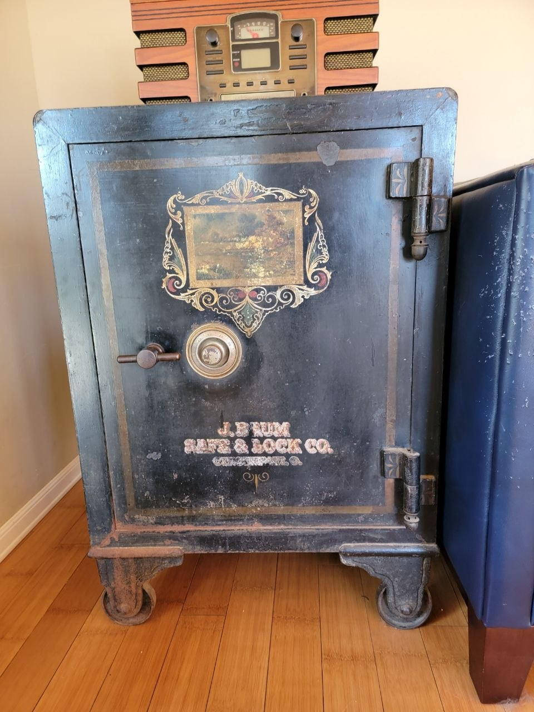
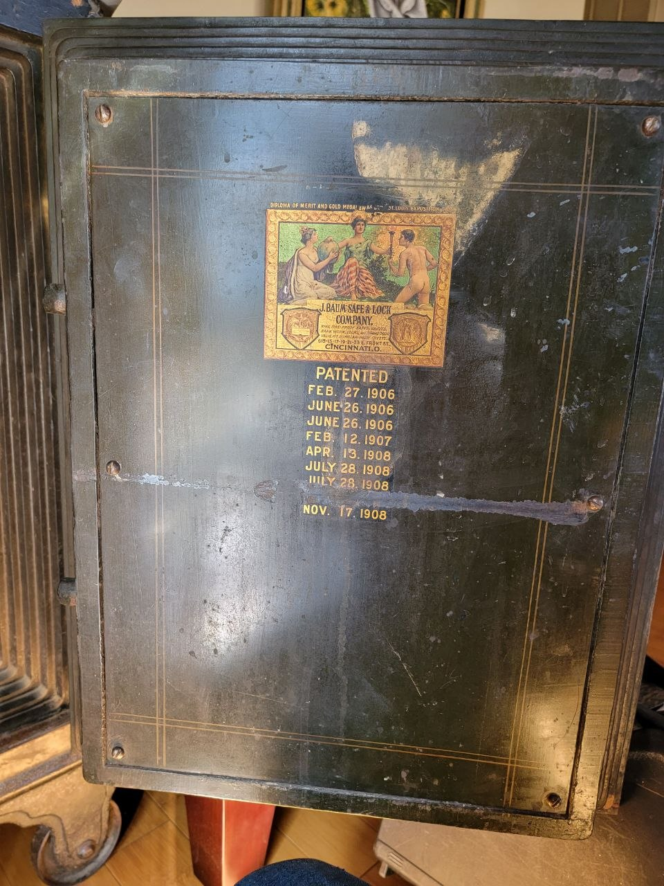
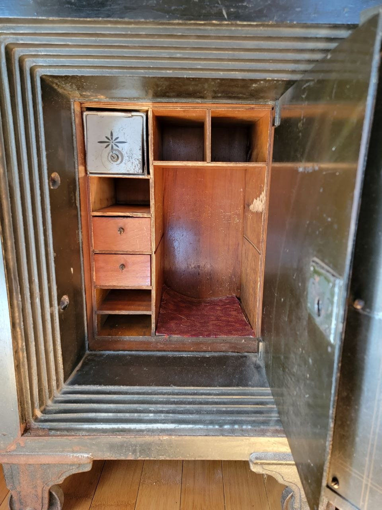

J. Baum Safe Patented 1906
Some safes come to you as a job. This one came to me as a piece of American industrial history that happened to be locked.
It's a J. Baum Safe & Lock Co. safe — cast iron, built in Cincinnati, Ohio, with a patent plate dated 1906. Over a century of use behind it, and still heavy enough that you don't move it alone.



A Cincinnati safe company with deep roots
The J. Baum name goes back further than most people realize. The lineage runs through the Warth-Baum Safe Company, which started around 1870, then became the Baum Safe Company in 1893. The J. Baum Safe & Lock Co. was formally organized on May 26, 1916, to succeed that business — meaning the safes carrying the Baum name were being built for nearly half a century before the company took its final form.
What you notice working on one is the weight of the thing. The body is cast iron, thick enough that the door alone takes two hands to swing. The bolt work is simple and overbuilt — big square bolts, a sturdy wheel pack, nothing that relies on a part you can't get made. That simplicity is why these are still openable a hundred-plus years later. A modern electronic lock with a failed solenoid is a service call. A Baum is a matter of understanding the mechanism.
They were working safes, sold to merchants and shopkeepers who needed the box on the floor to hold. Plenty of them are still stamped with the original owner's name — a bootery, a hardware store, a family business that closed three generations ago.
The patent plate tells the story
The inside door plate on these safes lists a series of patent dates — commonly February 27, 1906; June 26, 1906; October 13, 1908; and November 17, 1908. That stacking of patents is typical of the era: each one covered a refinement to the bolt work, the lock, or the door construction, and manufacturers stamped every one they held to prove the quality of the piece.
A 1906 patent date tells you when the design was locked in, not when the safe was finished — these were built to order, sometimes years after the patent issued. What it does tell you is that the safe predates the standardization that came later. Patterns and castings were made in-house, doors were fitted by hand, and nobody was building to a five-year replacement cycle.
Why it was worth saving
This safe has character, history, and craftsmanship you just don't see in modern boxes. Heavy steel, mechanical works built to outlive their owners, and a patina that tells you where it's been.
I opened it, serviced the lock, and set a new combination. Now it can be used, or handed down — instead of being junked.
Company history compiled from period patent plates and published restoration records for J. Baum Safe & Lock Co. safes. Patent dates vary by unit — check the plate inside your own door.
Got an old safe? Let's see what it is.
GSA Certified • Preferred Technician for Liberty, Fort Knox, Stealth, Superior & National • CA LCO 4160
Pricing at frantzlocksmithservice.com/pricing